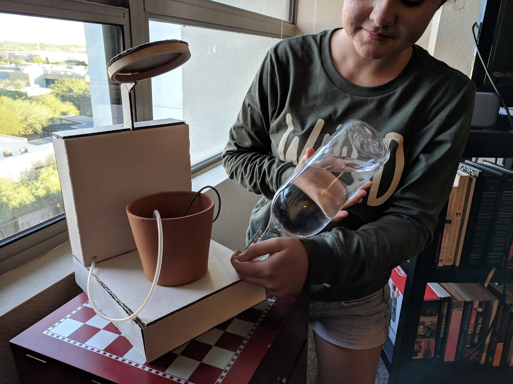
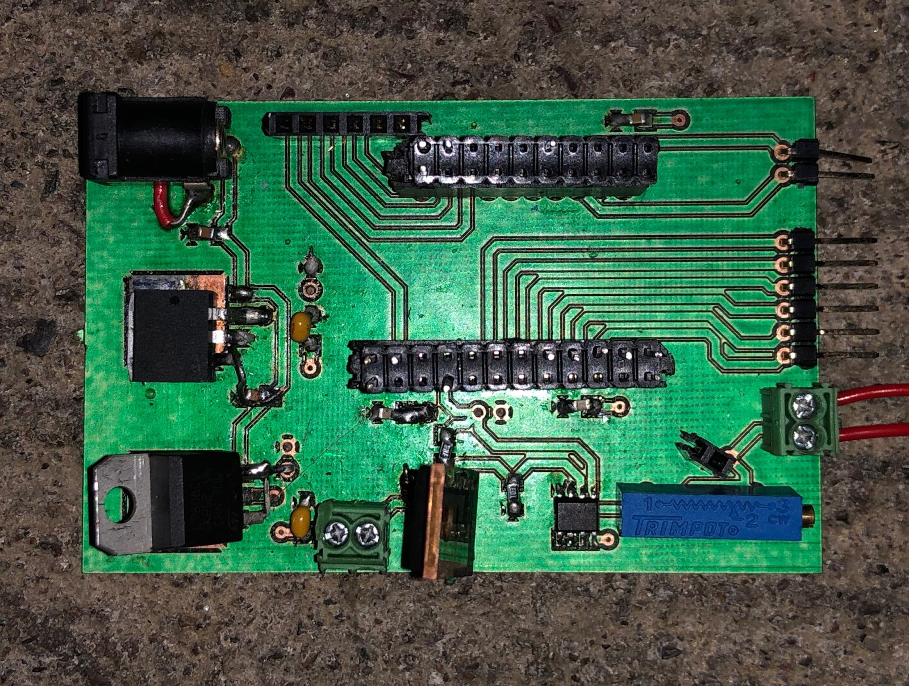

01 THE PROBLEM
Problem Statement
This device automatically manages the soil hydration and light level of a potable plant and reports its status via bluetooth in order to familiarize an amatuer gardener with the process of growing difficult plants.

Impact Statement
Since this device is aimed to educate and assist amatuer gardeners, it removes the stress of monitoring the watering of their garden as well as constantly keeps the user updated on the plant’s status. While this does take away from the discipline of routine watering and careful study of the plants, it helps them grow more difficult plants that require a greater level of attention that they may not yet be prepared for. However, this does not allow them to learn through failure since the system does the work for them, but allows the user to build confidence in gardening and encourages them to tackle more difficult to grow plants.
02 PCB FABRICATION
Power Requirements
The power to the system is supplied via a power brick at 18V and 3A and from there split into two different power rails, 5V and 12V. The regulators selected for this job are the LM7805SX and the LM7812SX for a few reasons. First off is that the SX can handle higher currents at 1.5A compared to the standard LM78XX regulators’ 1A. This allows us to make full use of the motor which draws 1.25A and allows wiggle room for stretch goals on the 5V rail which at max only pulls 0.531A. Additionally the SX comes in a surface mount package. The benefit of this would allow use to meet the instructor defined constraint of surface mount components as well as let us utilize the PCB itself as a heat sink.

Physical Fabrication
The PSoC itself has all of its voltage pins tied together, to the 5V rail coming from the linear regulator, as well as all of its ground pins tied together to create a central ground. Then, three 1 microF capacitors were used as bypass capacitors to dampen the electrical noise surrounding the inputs of and outputs of the PSoC. We ensured these components were physically close to the PSoC on the board in order to give them maximum effect.
03 SUPER-STRUCTURE

CAD Model Overall
One of the criteria of our project was to have a compact design suitable for indoor use. Planning for this we aimed for something roughly the size and shape of a coffee maker, the result of which you can see in pictures below. The design is broken up into three main parts: The base, the electronics enclosure, and the LED array.

CAD Model - Base
The base, the part which the flower pot rests on, is mainly structural and meant to house the water reservoir. While designing the base we made sure that the space within it would allow us to fit a water tight container that could hold a minimum of 1 liter. Earlier designs had a cap on the top of the base to refill the reservoir but in the end was replaced by an easily removable and refillable water bladder.

CAD Model - Electronics Enclosure
The electronic enclosure, the box that rests atop the base and holds the LED array, was mainly designed to protect the electronics. With the water bladder placed in the base we figured the circuit board and power supply should be mounted above this to avoid any catastrophic failure due to a spill from the reservoir, hence its placement above the base. Considering the size of our board, this piece did not need to be that large of a part. However aligning it with the dimensions of the base made it far more aesthetically pleasing, easier to access, and gave us more wiggle room to position our wires.